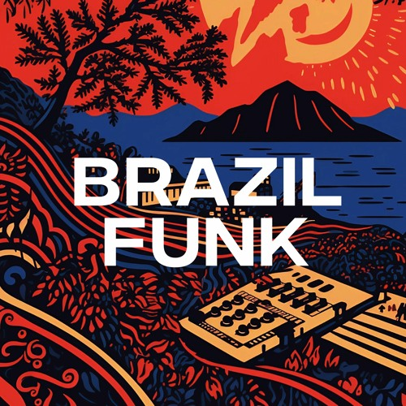
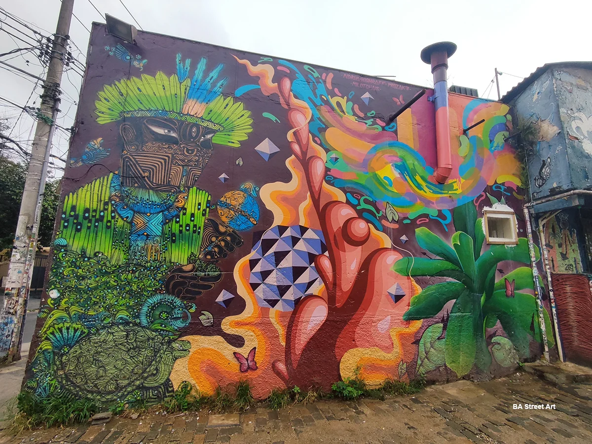

Brazilian Funk is a Brazilian hip hop-influenced music genre from Rio de Janeiro, taking influences from musical styles such as Miami bass and freestyle.

Samba is a lively dance of Afro-Brazilian origin in a 2 by 4 time danced to samba music. Today Samba is the most prevalent dance form in Brazil, and reaches the height of its importance during the festival of Carnaval. There is actually a set of dances, rather than a single dance, that define the Samba dancing scene in Brazil.

Graffiti Murals are a type of graffiti in Brazil that is used to cover a different type of graffiti which is called Pichação.